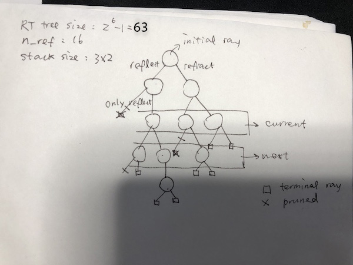

<script src=lib3.js></script>
<script src="https://cdnjs.cloudflare.com/ajax/libs/ace/1.4.12/ace.js"crossorigin="anonymous"></script>
<script src="https://cdnjs.cloudflare.com/ajax/libs/ace/1.4.12/ext-language_tools.js" crossorigin="anonymous"></script>
<style>
 .ace_gutter-layer {
   /* original width is 48px */
   width: 25px !important;
 }
 
 .ace_gutter-layer > * {
   /* 48 - 32 = 16 */
   margin-left: 0;
 }
 .ace_gutter-cell {
  padding-left: 0 !important;
  padding-right: 3px !important;
 }
 .code{ 
    font-family: "monaco, menlo, ubuntu mono, consolas, source-code-pro" ;
    }
 </style>
<body bgcolor=white text=black link=black alink=blue vlink=blue>
<center>
   <!!--- SUPER SAMPLING THE W/H PARAMS FOR CANVAS ARE RENDER SIZE, IN THE CSS IS ACTUAL(DISPLAY) SIZE.--->
<canvas id='canvas1' style=" overflow: hidden !important; width: 600px !important; height:600px !important;" width=600 height=600></canvas>
</center>
</body>


<!!-------- VERTEX SHADER: YOU PROBABLY DON'T WANT TO CHANGE THIS RIGHT NOW -------->

<script id='my_vertex_shader' type='x-shader/x-vertex'>
   attribute vec3 aPos;
   varying   vec3 vPos;
   void main() {
      gl_Position = vec4(aPos, 1.);
      vPos = aPos;
   }
</script>


<!!-------- FRAGMENT SHADER: THIS IS WHERE YOU WILL DO YOUR WORK -------->
<!!-------- FRAGMENT SHADER: MOVED TO ./shader.frag!! LOADED IN lib2.js -------->
<!--script src="shader.frag" id='my_fragment_shader' type='x-shader/x-fragment'> </script>


<!!-------- CREATE A PROPERLY DESCRIPTIVE TITLE BELOW -------->

<script id='my_title' type='text/html'>
RTX Extreme 
</script>


<!!-------- HERE IS WHERE YOU CAN PROVIDE A LONGER TEXT DESCRIPTION -------->

<script id='my_instructions' type='text/html'><font color=#909090>
<p style="font-size:30px; ">In this homework, I implemented Global illumination w/ 
   Realtime Recursive Ray Tracing! 
<p>
<i style="font-size:25px;">Usage: </i>
<ul>
   <li>Ctrl+Alt/Option+T: Toggle Texture.</li>
   <li>Ctrl+S: Download fragment shader.</li>
   <li>Ctrl+Alt/Option+N: Reset ViewPoint.</li>
   <li>Ctrl+Alt/Option+P: Toggle Pause/Resume.</li>
   <li style="color:red;">Please unfocus the Editing area (click somewhere else on the page) to use hotkeys.</li>
   <li>Double Click on canvas (WITHOUT key modifiers): Toggle Pause/Resume.</li>
   <li>DRAG, SCROLL on canvas: Changing Viewing point.</li>
   <li>Please use Chromium based browser.</li>
   <li>Super Sampling(0.25x-4x): increase rendering size for better visual or decrease rendering size for better performance.</li>
   <li>Spheres(1 - 5): number of spheres, performance will suffer if adding too many spheres.</li>
</ul>
<i style="font-size:25px;">How it works:</i>
<ul>
   <li>I added recursive ray tracing with fraction support.</li>
   <li><a style="color:red;">About the scene: </a>There're two spheres in the center, the bouncing one in the very center (the Earth) is not transparent nor is it reflective, 
      the outer one is both transparent and reflective and has the texture of the Sun(barely distinguishable). 
      The small sphere embedded running circle is reflective but not transparent. You can also add
       two additional spheres via the button above. (up to 5).
   </li>
   <li>If your scene is clipped, this is a bug from chromium, you may reset the viewport by adjust super sampling.</li>
   <li>Each hit will now spawn 2 rays, but there're serious performance issues, because 
      the number of rays increases exponentially. I resolved this issue by:
   </li>
   <ul>
      <li>Pruning: If the weight of this ray is too small, dispose it.</li>
      <li>Smarter Stack frame utilization: Now the stack frame will only store last rays and next rays. 
         By alternating 2 arrays storing last ray and next ray, I don't need to store other rays.
      </li>
      <li>By combining these methods I managed to significantly reduce RT depth and 'stack' size, 
         While supporting nested object and objects both reflection and refraction rays on the same surface. 
      </li>   
   </ul>
   </img>
 </ul>
<p>

</script>


<!!-------- YOU PROBABLY WANT TO CHANGE ANYTHING BELOW RIGHT NOW -------->
   
<script>

// CREATE THE HTML DOCUMENT
let flags = 0x0;
let vs = my_vertex_shader.innerHTML;
    //* LOADING FRAGMENT SHADER
    var client = new XMLHttpRequest();
    client.open('GET', './shader.frag');
    client.onloadend = function() {
      fs = (client.responseText);
      //* START EVERYTHING AFTER FRAGMENT SHADER IS DOWNLOADED.
      gl_start(canvas1, vs, fs);
      editor.getSession().setValue(fs);
      editor.session.on('change', function(delta) {
         if(typeof canvas1.setShaders === "function")
         {
            canvas1.setShaders(vs, editor.getSession().getValue());
            setUniform('1i', 'flags', flags);
         }
      });
    }
   client.send();
document.body.innerHTML = [''
   ,'<font size=7 color=#909090>' + my_title.innerHTML
   ,'' 
   ,'<div id="fps" style="font-size:25;float:right;margin-right:18px;"></div>' 
   ,'<TABLE cellspacing=0 cellpadding=0><TR>'
   ,'<td><font color=red size=5><div id=errorMessage></div></font></td>'
   ,'</TR><TR>'
   ,'<table cellspacing=0>'
   ,'<tr>'
   ,'<td valign=top>'
   ,'<div id="ace" style="width:800px;height:2200px;"></div>'
   ,'</td><td valign=top>' + document.body.innerHTML
   ,'<input type="number" id="ins" style="margin-left:3px;font-size:24px;width:100px;height:45px" value="3" max="5" min = "1">'
   ,'<button id="bns" style="margin-left:5px;font-size:24px;width:180px;height:45px">Set Spheres</button>'
   ,'<input type="number" id="insamp" style="margin-left:3px;font-size:24px;width:100px;height:45px" value="1" max="4" min = "0.25" step="0.2">'
   ,'<button id="bnsamp" style="margin-left:5px;font-size:24px;width:200px;height:45px">Super Sampling</button>'
   ,'<div style=\'font-size:25px\'>' + my_instructions.innerHTML + '</div>' + '</td>'
   ,'</tr></table>'
   ,'</TR></TABLE>'
   ].join('');
bns.onclick=function(e){
   if(ins.value>0 &&ins.value<=ns &&cns!=ins.value)
   {   
      cns = ins.value;
      fragmentShaderDefs = '\n const int cns = ' + cns + ';';
      if(typeof canvas1.setShaders === "function")
         canvas1.setShaders(vs, editor.getSession().getValue());
   }
}
bnsamp.onclick=function(e){
   let multiplier  = insamp.value;
   let w = parseInt(canvas1.style.width)*multiplier;
   let h = parseInt(canvas1.style.height)*multiplier;
   canvas1.height = h;
   canvas1.width = w;
   gl.viewport(0, 0, w, h);
   gl.clearRect(0, 0, w, h);
}
// SET UP THE EDITABLE TEXT AREA ON THE LEFT SIDE.
ace.require("ace/ext/language_tools");
var editor = ace.edit("ace", {
   mode:"ace/mode/glsl",
   theme:"ace/theme/crimson_editor"
});
editor.setOptions({
   enableBasicAutocompletion: true,
   enableSnippets: true,
   enableLiveAutocompletion: true,
   fontSize: 14,
   fontFamily: "monaco, menlo, ubuntu mono, consolas, source-code-pro",
   fixedWidthGutter: true,
   showGutter: true,
   showPrintMargin: false,
});
editor.setAutoScrollEditorIntoView(true);
// REPARSE THE SHADER PROGRAM AFTER EVERY KEYSTROKE.
delete editor.KeyBinding;

let lastTime = Date.now();
let animating = true;
let ctrl = false, alt = false, shift = false, fpson = true, moving = false, over = false;
let mousedx = 0, mousedy = 0, mousedz = 0;
let cx = 1, cy = 1, sx = 0, sy = 0;
let mouselastX, mouselastY;
let lastClick = undefined;
let pause_resume = function(){
   if(animating)
         lastTime = Date.now();
      else
         startTime += Date.now() - lastTime;   
      animating = !animating;
};
canvas1.addEventListener('click',function(ev){
   if(!(shift && alt) && lastClick&& Date.now()-lastClick<400)
      pause_resume();
   lastClick = Date.now();
   //moving = false;
});
canvas1.addEventListener('mouseover', function(e){
   over = true;
   const mask = 0x8;
   flags |= mask;
   setUniform('1i', 'flags', flags);
});
canvas1.addEventListener('mousedown', function(e){
      moving = true
      mouselastX = mouselastY =  undefined;
});
canvas1.addEventListener('mousemove', function(e){
      if(!(mouselastX==undefined || mouselastY == undefined)&&moving){
         mousedx -= (mouselastX - e.offsetX)/60;
         mousedy -= (mouselastY - e.offsetY)/60;
         cx = Math.cos(mousedx);
         sx = Math.sin(mousedx);
         cy = Math.cos(mousedy);
         sy = Math.sin(mousedy);
         setUniform('Matrix3fv', 'transformation', false, [cx, sy*sx, sx*cy, 0, cy, -sy, -sx, cx*sy, cx*cy]);
      }
      mouselastX = e.offsetX;
      mouselastY = e.offsetY;
});
canvas1.addEventListener('mouseup', function(e){
   moving = false;
});
canvas1.addEventListener('mouseout', function(e){
   const mask = 0x8;
   flags &= !mask;
   setUniform('1i', 'flags', flags);
   over = false;
   moving = false;
});
canvas1.addEventListener('wheel', function(e){
      mousedz += e.wheelDelta/600;
      setUniform('1f', 'dFL', mousedz);
      e.stopImmediatePropagation();
});
canvas1.scroll(function(e) {e.stopPropagation();});
rtx.style.cursor="pointer";
let rtswitch = function(){
   alert('Ray Tracing is always on. See hw2 where rt can be toggled on/off.')
   rtx.src='./RTXon.svg';
}
rtx.addEventListener('click', rtswitch);
var requestAnimationFrame = window.requestAnimationFrame ||
 window.mozRequestAnimationFrame || window.webkitRequestAnimationFrame || window.msRequestAnimationFrame;
let fpscounter = function(time){
      if (start === undefined)
         start = time;
      else
         fps.innerHTML = Math.round(10000/(time-start))/10 + ' fps';
      start = time;
      if(fpson)
         ;//requestAnimationFrame(fpscounter);
      else{
         start = undefined;
         fps.innerHTML = '';
      }
   };
document.addEventListener('keydown',(e)=>{
   if(e.code.startsWith('Shift'))
      shift = true;
   if(e.code.startsWith('Control'))
      ctrl = true;
   if(e.code.startsWith('Alt'))
      alt = true;
   else if(ctrl && alt && e.code == 'KeyT'){
      const mask = 0x1;
      flags = flags&!mask | (!(flags&mask)?mask:0);
      setUniform('1i', 'flags', flags);
   }
   else if (ctrl &&e.code == 'KeyS'){
      let a = document.createElement('a');
      a.href = "data:text/plain,"+encodeURIComponent(editor.getSession().getValue());
      a.download = 'shader.frag';
      a.click();
   }
   else if(ctrl && alt&&e.code == 'KeyR')
      rtswitch();
   else if(ctrl && alt&&e.code == 'KeyN')
   {
      flags = 0;
      moving = false;
      mousedx = mousedy = mousedz = 0;
      cx = Math.cos(mousedx);
      sx = Math.sin(mousedx);
      cy = Math.cos(mousedy);
      sy = Math.sin(mousedy);
      rtx.src='./RTXon.svg';
      setUniform('Matrix3fv', 'transformation', false, [cx, sy*sx, sx*cy, 0, cy, -sy, -sx, cx*sy, cx*cy]);
      setUniform('1f', 'dFL', mousedz);
      setUniform('1i', 'flags', flags);
   }
   else if(ctrl && alt&&e.code == 'KeyP')
      pause_resume();
   else if(ctrl && alt&&e.code == 'KeyF')
      if(!fpson)
      {
         fpson = true;
         requestAnimationFrame(fpscounter);
      }
      else
         fpson = false;
});

document.addEventListener('keyup',(e)=>{
   if(e.code.startsWith('Control'))
      ctrl = false;
   if(e.code.startsWith('Alt'))
      alt = false;
   if(e.code.startsWith('Shift'))
      shift = false;
});
let startTime = Date.now();
let lastFrameTime = 0;
function animate(gl) {
   let uTime;
   if(animating)
   {
      uTime = (Date.now() - startTime) / 1000;
      setUniform('1f', 'uTime', uTime);
   }
   else
   {
      uTime = (lastTime - startTime) / 1000;
      setUniform('1f', 'uTime', uTime);
   }
   setUniform('4f', 'Sph[4]', 0.5*Math.sin(uTime*1.),0.08*Math.sin(uTime *0.9),.5*Math.cos(uTime*1.),.12);
   setUniform('4f', 'Sph[3]', .9*Math.sin(uTime*.4),0.,.9*Math.cos(uTime*.4),.25);
   setUniform('4f', 'Sph[2]', .22*Math.sin(uTime*1.2),0.05,.22*Math.cos(uTime*1.2),.05);
   setUniform('4f', 'Sph[0]', 0,0.05*Math.cos(uTime + 1.),.045*Math.cos(uTime),.15);
   setUniform('4f', 'Sph[1]', 0,0.,0,.25);
}
let start;
requestAnimationFrame(fpscounter);
</script>

